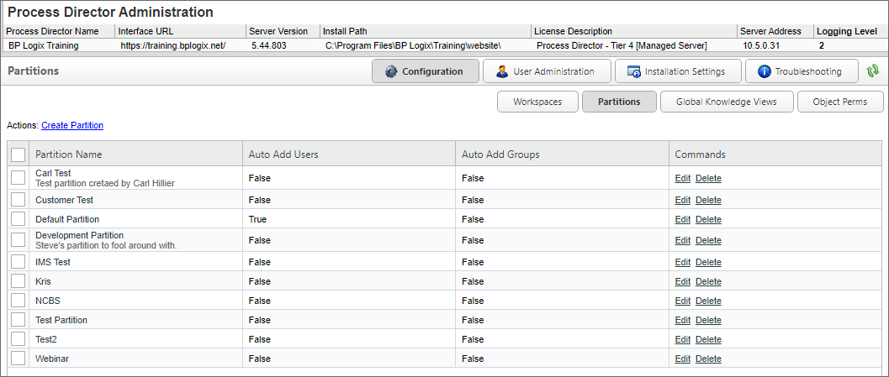
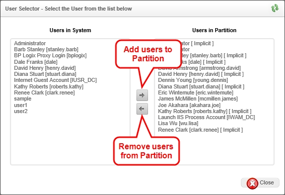
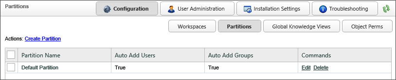
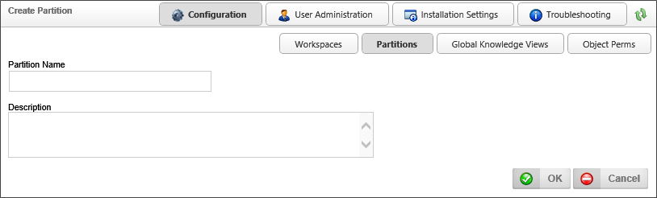
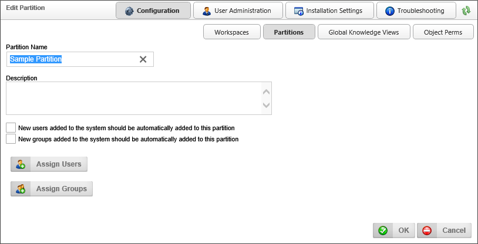
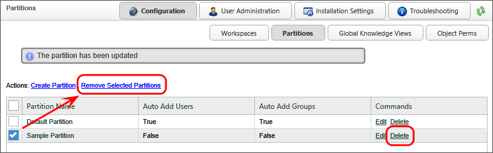

When importing XML/PDZ files from another system, always import the Partition files first, then Global Knowledge Views, and the Profiles last.
When importing XML/PDZ files from another system, always import the Partition files first, then Global Knowledge Views, and the Profiles last.Process Director enables you to create partitions in an installation, if needed. Partitions function as separate data stores or independent sections of a Process Director installation. Objects stored in one partition can't interact with objects stored in a different partition. Similarly, users assigned to one partition can't see or work with objects stored in a different partition. One common use of partitions is to segregate sensitive data from data that is more generally accessible. For instance, Process Director objects that support HR operations, which often use sensitive privacy data, can be placed in a partition that can only be accessed by HR personnel. By default, a Process Director installation contains only one partition, known as the "Default" partition. Additional partitions, if necessary, can be added by system administrators.
Partitioning a system can provide secure grouping of users, documents, permissions and processes. Users can belong to multiple partitions, but this is only required when a system must be logically divided into multiple server partitions (e.g. application service providers). All users are automatically a member of the default partition (named “Default Partition”). Information can be shared across partitions for more flexibility with business processes.
The Partitions page of the IT Admin area's Configuration section displays a list of partitions on the system. You can create, edit and delete partitions from the list displayed. Once you have created your partition, click on the Edit link next to that partition. You can now administer the users and groups in that partition.

When adding users and groups you'll notice that some users might have “[ Implicit ]” next to the user name. This implies that they were added to the partition through a group. If a group is added to a partition that the user is a member of, the user will be added. If the group was removed the user will be removed. “[ Implicit ]” won't show if the user was added directly.

When importing XML/PDZ files from another system, always import the Partition files first, then Global Knowledge Views, and the Profiles last.
In the Configuration section of the IT Admin area, click the Partitions button to view the Partitions page. The Partitions page will display a list of the current partitions.

To create a new partition, click the Create Partition link in the Actions links displayed on the upper left portion of the screen. Clicking the Create Partition link will open the Create Partition screen.

In the Partition Name property text box, enter the name for the partition, then enter a brief description in the Description property field. When you have entered a name and description, click the OK button to create the partition, and open the Edit Partition screen. In the Edit Partition screen, there are some additional properties that can be set.
If this box is checked, then every time a new user is added to Process Director, the user will automatically be added to this partition.
If this box is checked, then every time a new user group is added to Process Director, it will automatically be added to this partition.
Clicking on the Assign Users button will open the User Selector dialog box, which enables you to select users to assign to the partition.
Clicking on the Assign Groups button will open the Group Selector dialog box, which enables you to select groups to assign to the workspace.

Once a partition has been created, you can delete the partition from the Partitions page. Each partition has a Delete link in the Commands column that you can click to select the partition. Additionally, you can remove multiple partitions at the same time by checking the check box next to the partition names, which will cause a Remove Selected Partitions link to appear in the actions links at the top of the page. Once you have checked the partitions you wish to remove, click the Remove Selected Partitions link.

Continue to the documentation for the Global Knowledge Views page.